Bastien Tabordet
Étudiant en réseaux & télécoms
- Âge20 ans
- OrigineLoiret (45)
- ÉtudesClermont-Ferrand (63)
Recherche une alternance dès octobre 2026
Comprendre les réseaux. Construire des solutions.
Étudiant en 2e année de BUT Réseaux & Télécommunications · IUT de Clermont-Ferrand
J'ai 20 ans, je viens du Loiret et j'étudie à Clermont-Ferrand. Ce qui m'anime : comprendre comment les données circulent, configurer les équipements qui les transportent et apprendre à les protéger. Prochaine étape : une alternance en réseaux et cybersécurité.
Étudiant en réseaux & télécoms
Une formation très concrète : je travaille sur du matériel professionnel (routeurs, switchs, pare-feux, téléphonie IP) et j'apprends à concevoir, configurer et sécuriser de vrais réseaux.
À partir d'octobre 2026, dans l'informatique, les réseaux ou la cybersécurité.
Attentif aux détails, organisé, et toujours partant pour comprendre comment les choses fonctionnent.
Le BUT me donne des bases solides sur les infrastructures ; l'alternance me permettra de les mettre en pratique en entreprise. Mon objectif ensuite : poursuivre en école d'ingénieurs, spécialité cybersécurité.
Formation
Du bac scientifique à l'IUT, en passant par une prépa d'ingénieurs : chaque étape m'a rapproché des réseaux.
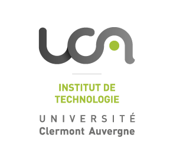
IUT — Clermont-Ferrand (63)
Formation en trois ans basée sur les infrastructures réseau, la cybersécurité, les télécommunications et l'administration système. Acquisition de compétences techniques et professionnelles à travers des projets pratiques et des stages en entreprise ou une alternance.
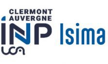
ISIMA — Clermont-Ferrand (63)
Préparation à l'école d'ingénieurs ISIMA, en suivant les cours de licence maths-informatique et des modules dédiés à l'ISIMA.
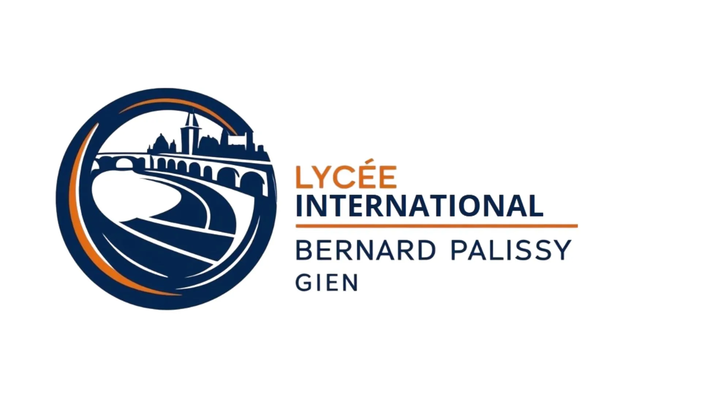
Lycée Bernard Palissy — Gien (45)
Obtention du baccalauréat avec mention assez bien.
Compétences
Du signal jusqu'au code : ce que j'ai appris et pratiqué en cours, en projets et par curiosité.

Simulation et conception de réseaux, test de configurations avant déploiement en environnement réel.
Configuration pratique d'équipements réseau professionnels.
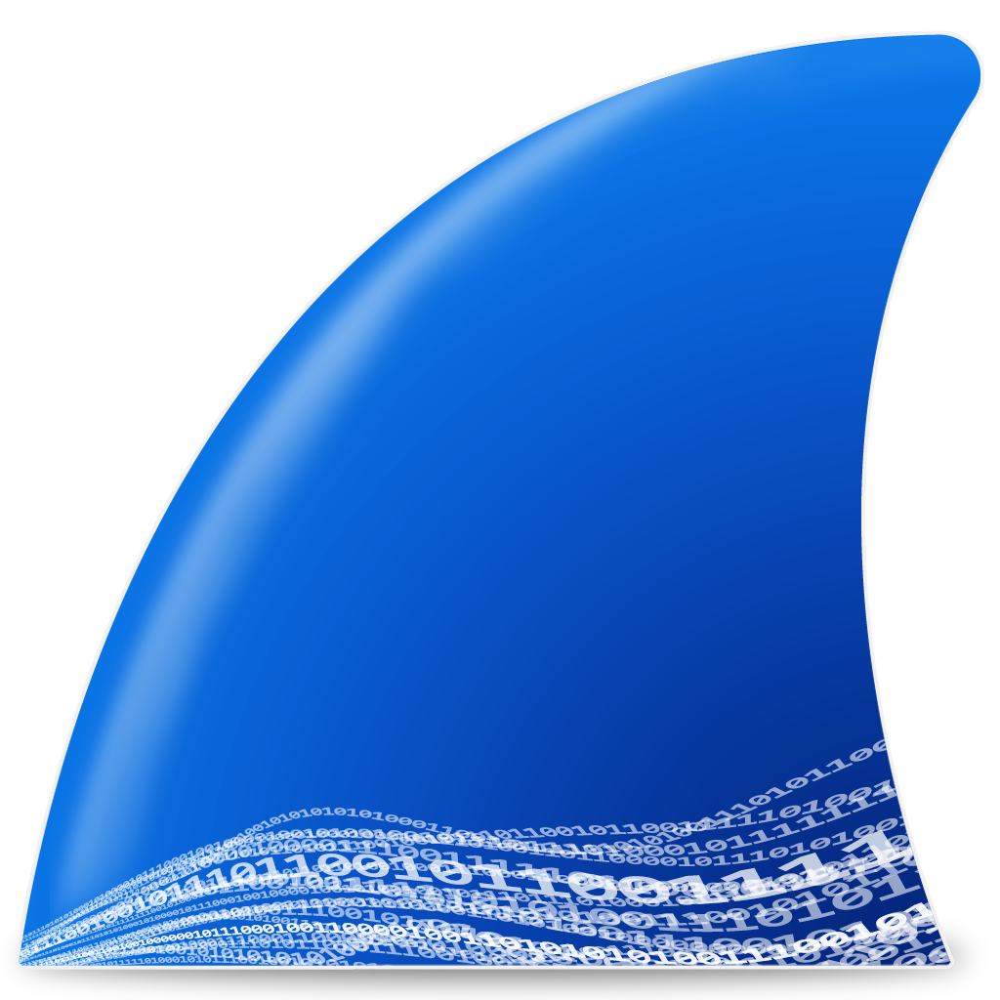
Analyse de trames réseau.

Compréhension des protocoles réseau essentiels et de leur fonctionnement.

Analyse temporelle et fréquentielle (séries et transformée de Fourier) et traitement numérique (théorème de Shannon). Application sur Matlab pour l'étude de signaux (PWM, méthode de Monte-Carlo, projets SAE22).
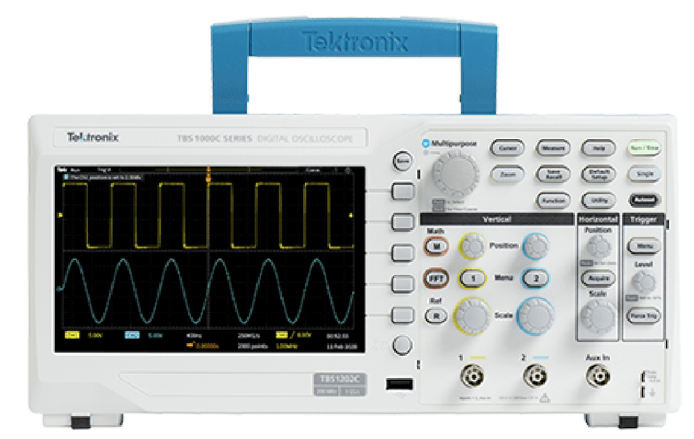
Utilisation experte d'analyseurs de spectre et d'oscilloscopes (fonctions FFT). Paramétrage avancé (SPAN, RBW, VBW), exploitation des spectres (OBW, DSP) et mesure de la qualité de réception (SNR).
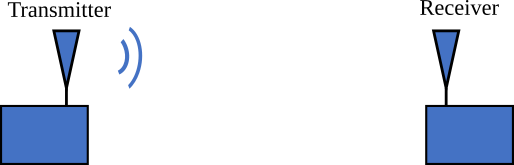
Réalisation de bilans de liaison, modélisation mathématique et hypsogrammes. Manipulation des échelles logarithmiques (dB, dBm) et analyse des circuits et réseaux linéaires (lois de Kirchhoff, régimes transitoires).
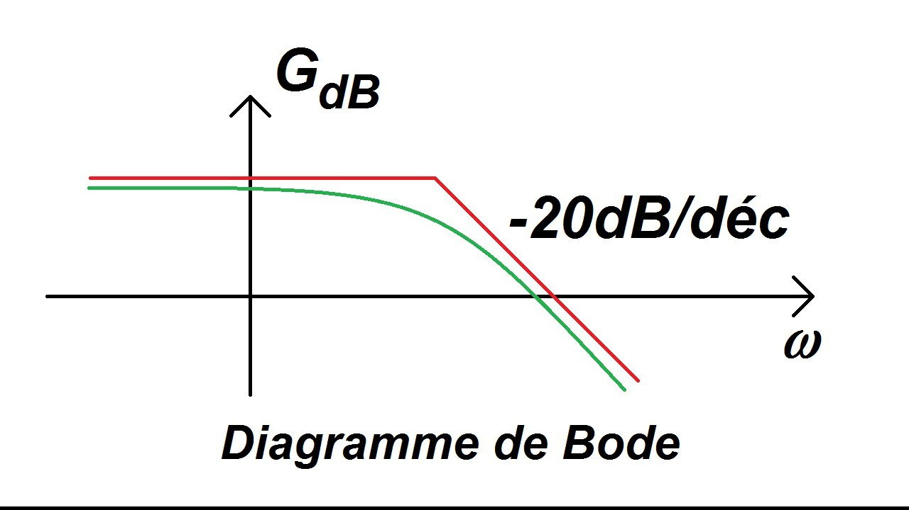
Caractérisation de filtres (passe-bas, passe-haut, passe-bande et réjecteur) et construction de diagrammes de Bode en module et en phase.

Mise en place de téléphones de bureau, adaptateurs ATA, bornes DECT et softphones.
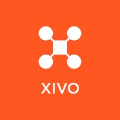
Configuration de lignes SDA, conférences, groupes d'appels, messagerie Zimbra.
Administration et configuration de systèmes Windows et Linux, gestion des utilisateurs et des permissions.
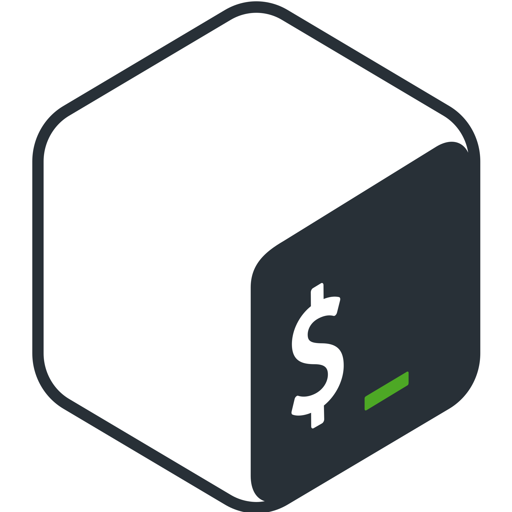
Automatisation de tâches répétitives et création de scripts pour l'administration système.
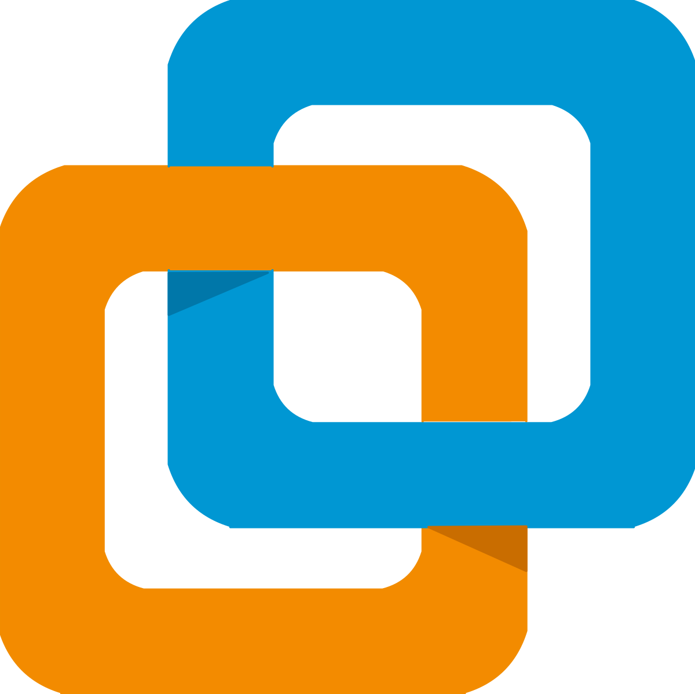
Création et gestion d'environnements virtualisés pour les tests et le développement.
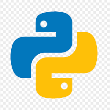
Développement de scripts d'automatisation réseau et d'outils d'analyse de données.

Création de sites web statiques et interfaces utilisateur responsive. → Voir le projet : création du portfolio

Manipulation et interrogation de bases de données relationnelles.
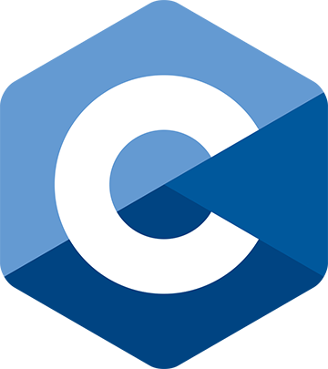
Programmation système et compréhension des concepts bas niveau.
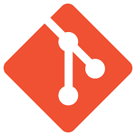
Gestion de versions et collaboration sur des projets de développement.

Capacité à lire la documentation technique en anglais et à échanger dans un contexte professionnel international.
Compréhension orale et écrite en espagnol.
Apprentissage actuel de l'italien pour élargir mes compétences linguistiques.
J'essaye d'être toujours à l'affût des nouvelles technologies et innovations dans le domaine de l'informatique. J'aime explorer, comprendre et apprendre de nouveaux concepts.
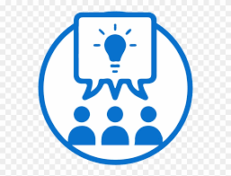
Je suis capable de collaborer efficacement sur des projets de groupe, partager mes connaissances et m'adapter à l'équipe pour atteindre des objectifs précis. J'ai pu développer cette qualité lors de projets académiques mais surtout au niveau de la gestion d'entreprise, d'équipes d'intervention dans un jeu vidéo.
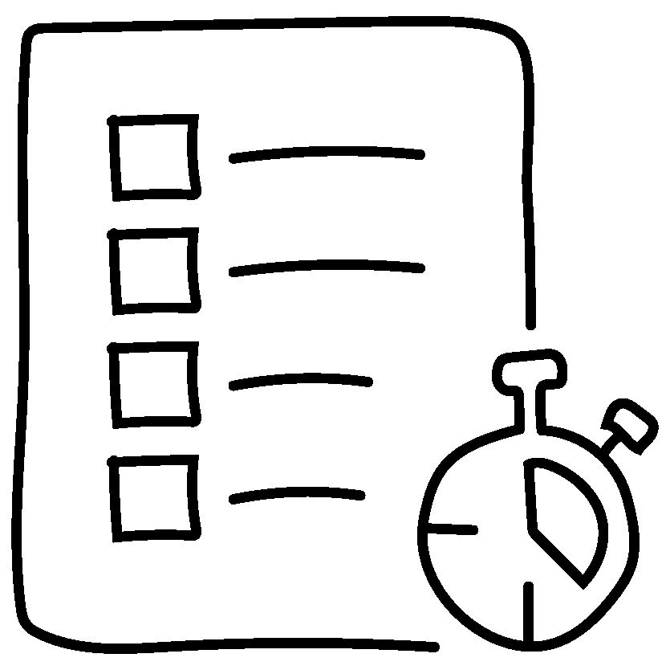
J'essaye de faire attention aux détails et je structure ma manière de travailler, ce qui peut être très utile dans la configuration réseau et la résolution de problèmes techniques.
Projets · Projet phare (BUT1 · SAÉ 23)
Mettre en place une solution informatique pour l'entreprise : une plateforme web de gestion des compétences en cybersécurité (PHP / MySQL).
Objectif : développer une application web complète permettant de répertorier, suivre et valider les compétences en cybersécurité des utilisateurs, à destination d'administrateurs, de formateurs et d'étudiants.
J'ai conçu et développé de A à Z une plateforme PHP/MySQL nommée CyberSkills, structurée autour d'une architecture claire (séparation config, includes, pages, uploads).
password_hash()) et gestion des sessionsRésultat : un site fonctionnel qui couvre 20 volets pédagogiques, de l'analyse à la sécurisation. Ce projet m'a permis de consolider mes compétences en développement web full-stack et d'appréhender les bonnes pratiques de sécurité applicative.
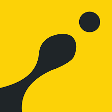
Projet personnelDéveloppement et énigmes mathématiques/logiques.
Exercices réalisés sur la plateforme CodinGame. Objectif : résoudre des problèmes algorithmiques, comme le Ghostleg, et développer ma logique de programmation.
Pour en savoir plus, rendez-vous sur mon précédent site, catégorie CodinGame.
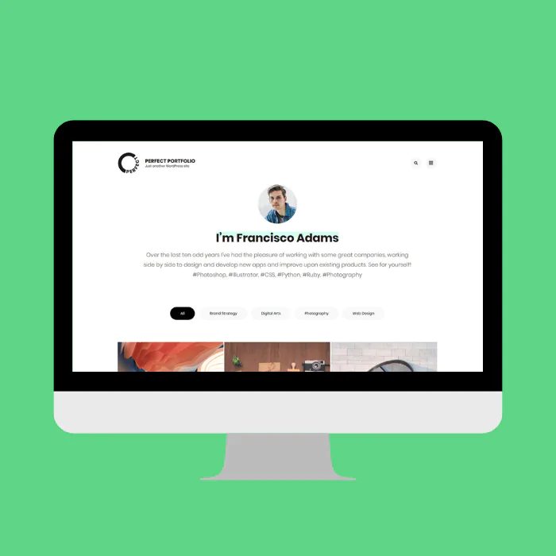
Projet BUT1Réalisation d'un site web professionnel.
Objectif : présenter mes compétences, mes projets, ma formation et mes centres d'intérêt. Réalisé en HTML/CSS avec l'aide de W3Schools, surtout pour le CSS, en couvrant toutes les catégories du cahier des charges.
Refonte 2026 : passage à une page unique animée au défilement (GSAP / ScrollTrigger), thème clair/sombre et accessibilité renforcée.
Projet BUT1
Découverte de l'environnement de programmation Matlab.
Objectif : configurer des signaux sinusoïdal, carré et triangulaire, puis les représenter graphiquement, en utilisant des scripts, des fonctions intégrées et des graphiques.
Résultat : projet réussi, avec des notions de manipulation et de visualisation de données utiles pour l'analyse et la simulation.
Deux petits outils codés pour ce portfolio : à tester directement ici.
Un faux terminal inspiré des commandes réseau (ping, nmap, traceroute…) pour présenter mon profil. Tapez help pour commencer.
Trois modes disponibles : phrases en français, vocabulaire réseau et commandes shell. Les statistiques (vitesse, précision, temps) sont calculées en temps réel.
Divers
Sport automobile, droit, musique, lecture et sport : ce qui m'occupe quand je ne configure pas un switch.
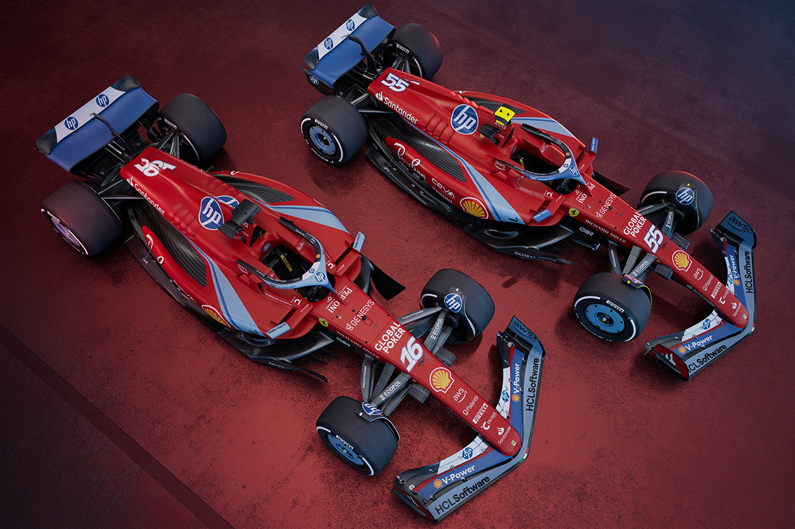
Je regarde assez souvent le championnat de F1, ainsi que quelques courses du WEC. Je suis aussi régulièrement l'actualité du sport automobile et les évolutions technologiques des véhicules de compétition.

J'ai choisi en terminale l'option DGEMC (Droit et grands enjeux du monde contemporain), ce qui m'a apporté une meilleure compréhension des enjeux géopolitiques et du cadre juridique national.
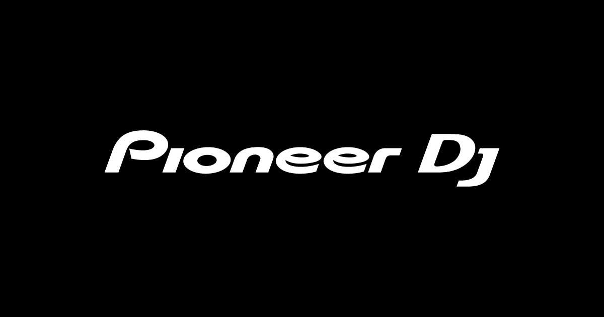
Je suis intéressé par le mix depuis une dizaine d'années. J'ai récemment acheté la DDJ-FLX4 de Pioneer et je m'initie aux techniques de DJing.
Je suis amateur de romans policiers, notamment des œuvres de Franck Thilliez. Quelques-uns de ceux que j'ai lus :
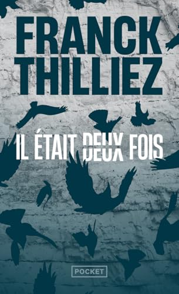
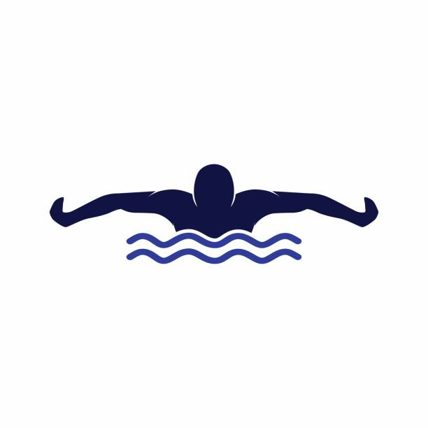
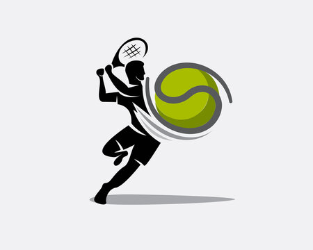
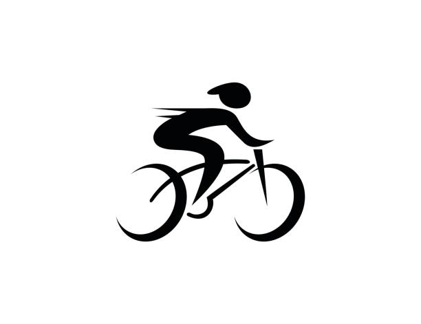
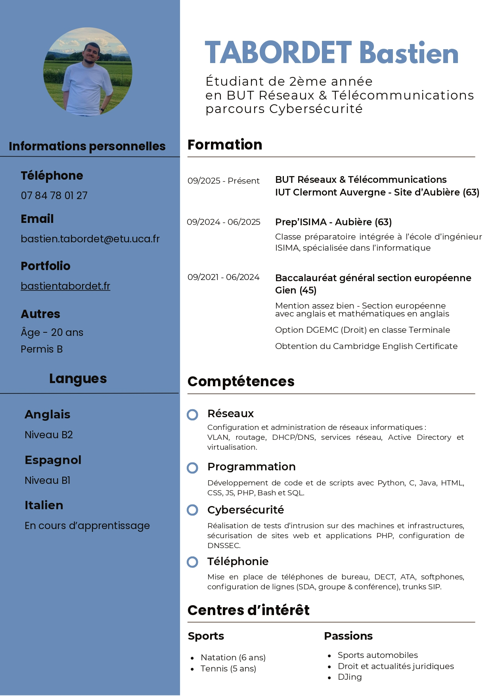
CV
Formation, compétences et centres d'intérêt : l'essentiel de mon profil, à consulter en ligne ou à télécharger.
Format PDF · s'ouvre dans un nouvel onglet.
Contact
Vous cherchez un alternant motivé en réseaux et cybersécurité à partir d'octobre 2026 ? Écrivez-moi ou retrouvez-moi sur LinkedIn.